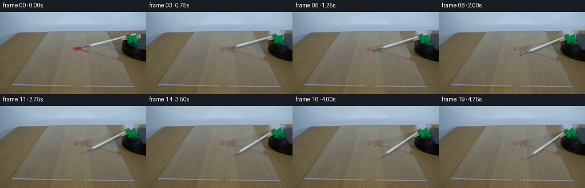
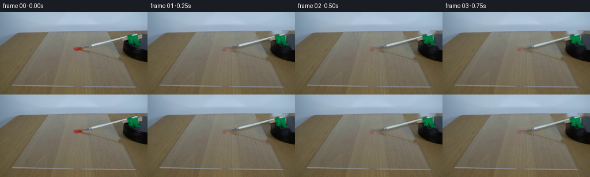
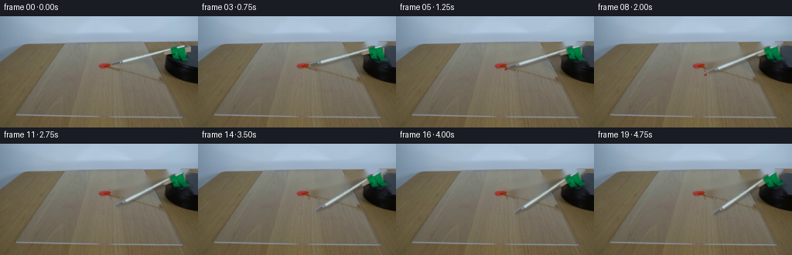
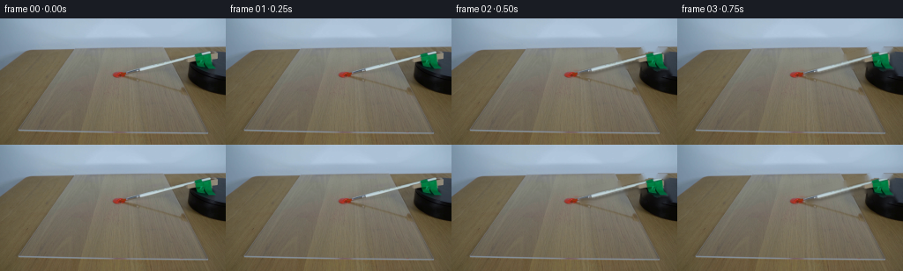
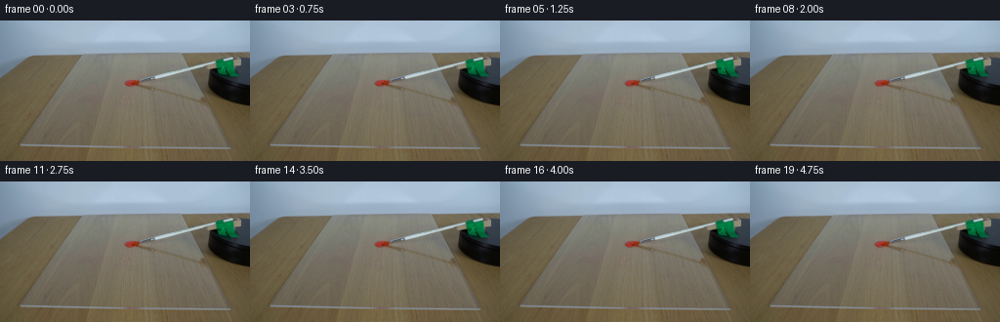
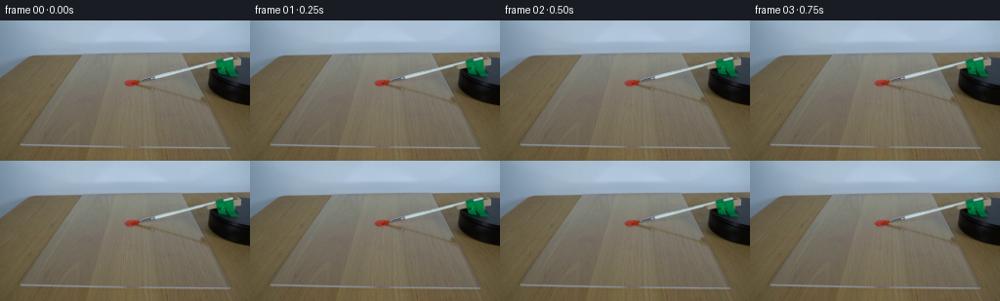
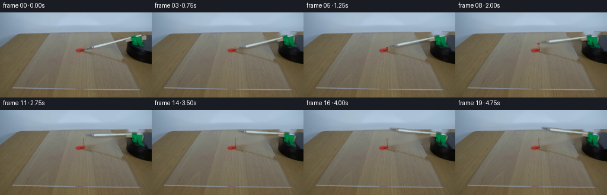

CODING AGENTS AS PIXEL WORLD MODELS
traex/DeepSeek-V4.1-Flash · 0131
点击播放 · 原生 RGB 像素
逐轮保存的候选
回放视频、检查图与代码变化。
每份候选均可单独播放。实际图片检查记录在下方工具轨迹中。
候选 01播放与检查图
点击播放 · 原生 RGB 像素


展开代码变化
--- 上一保存版本
+++ 本次保存版本
@@ -0,0 +1,252 @@
+from pathlib import Path
+
+import cv2
+import numpy as np
+from PIL import Image
+
+import artifact_io
+
+
+CASE_DIR = Path(__file__).resolve().parent
+N_FRAMES = 20
+FPS = 4
+
+
+def smoothstep(value):
+ value = np.clip(value, 0.0, 1.0)
+ return value * value * (3.0 - 2.0 * value)
+
+
+def build_brush_layers(source):
+ """Recover a clean plate and a feathered RGBA brush from the first frame."""
+ h, w = source.shape[:2]
+ rgb = source.astype(np.float32)
+ r, g, b = rgb[:, :, 0], rgb[:, :, 1], rgb[:, :, 2]
+ yy, xx = np.indices((h, w))
+
+ # The pale brush body is much brighter than the table around it. The green
+ # clamp is a separate material, but belongs to the same rigid assembly.
+ bright = (rgb.max(axis=2) > 145.0) & (xx > 130) & (xx < 224) & (yy > 34) & (yy < 73)
+ green = (
+ (g > r * 1.12)
+ & (g > b * 1.06)
+ & (g > 40.0)
+ & (xx > 215)
+ & (xx < 248)
+ & (yy > 35)
+ & (yy < 63)
+ )
+
+ bright = bright.astype(np.uint8) * 255
+ green = green.astype(np.uint8) * 255
+ bright = cv2.dilate(bright, np.ones((3, 3), np.uint8), iterations=1)
+ green = cv2.dilate(green, np.ones((3, 3), np.uint8), iterations=1)
+ mask = cv2.bitwise_or(bright, green)
+ mask = cv2.morphologyEx(mask, cv2.MORPH_CLOSE, np.ones((5, 5), np.uint8))
+
+ # Keep the paint dollop on the sheet rather than treating it as part of the brush.
+ red = (
+ (r > g * 1.22)
+ & (r > b * 1.22)
+ & (r > 62.0)
+ & (xx < 151)
+ & (yy > 55)
+ & (yy < 72)
+ )
+ mask[red] = 0
+
+ # Retain only the connected brush assembly, which prevents isolated table
+ # highlights from entering the moving sprite.
+ count, labels, stats, _ = cv2.connectedComponentsWithStats(mask, connectivity=8)
+ keep = np.zeros_like(mask)
+ seed = labels[52, 224]
+ if seed:
+ keep[labels == seed] = 255
+ for label in range(1, count):
+ x, y, width, height, area = stats[label]
+ if area > 80 and x > 130 and y > 35 and y + height < 75:
+ keep[labels == label] = 255
+ mask = keep
+
+ # Inpaint a little beyond the visible edge so the rigid sprite can move
+ # without exposing a dark seam from the photographed contact shadow.
+ clean_mask = cv2.dilate(mask, np.ones((9, 9), np.uint8), iterations=1)
+ clean_mask = cv2.GaussianBlur(clean_mask, (5, 5), 0.8)
+ background = cv2.inpaint(source, clean_mask, 4, cv2.INPAINT_TELEA)
+
+ alpha = mask.astype(np.float32) / 255.0
+ alpha = cv2.GaussianBlur(alpha, (3, 3), 0.55)
+ alpha[alpha < 0.025] = 0.0
+ rgba = np.dstack((source, np.clip(alpha * 255.0 + 0.5, 0, 255).astype(np.uint8)))
+ return background, rgba
+
+
+def transform_about_pivot(image, pivot, angle_deg):
+ """Positive angles rotate clockwise on screen (y coordinates point down)."""
+ h, w = image.shape[:2]
+ scale = 3
+ big = cv2.resize(image, (w * scale, h * scale), interpolation=cv2.INTER_NEAREST)
+ px, py = pivot[0] * scale, pivot[1] * scale
+ theta = np.deg2rad(angle_deg)
+ cosine, sine = np.cos(theta), np.sin(theta)
+ matrix = np.array(
+ [
+ [cosine, sine, px - cosine * px - sine * py],
+ [-sine, cosine, py + sine * px - cosine * py],
+ ],
+ dtype=np.float32,
+ )
+ warped = cv2.warpAffine(
+ big,
+ matrix,
+ (w * scale, h * scale),
+ flags=cv2.INTER_LINEAR,
+ borderMode=cv2.BORDER_CONSTANT,
+ borderValue=(0, 0, 0, 0),
+ )
+ return cv2.resize(warped, (w, h), interpolation=cv2.INTER_AREA)
+
+
+def composite_rgba(base, rgba):
+ rgb = rgba[:, :, :3].astype(np.float32)
+ alpha = rgba[:, :, 3:4].astype(np.float32) / 255.0
+ return np.clip(rgb * alpha + base.astype(np.float32) * (1.0 - alpha), 0, 255)
+
+
+def add_soft_shadow(base, rgba, dx=2, dy=2):
+ alpha = rgba[:, :, 3].astype(np.float32) / 255.0
+ shadow = np.zeros_like(alpha)
+ h, w = alpha.shape
+ x0, x1 = max(0, dx), min(w, w + dx)
+ y0, y1 = max(0, dy), min(h, h + dy)
+ shadow[y0:y1, x0:x1] = alpha[max(0, -dy) : min(h, h - dy), max(0, -dx) : min(w, w - dx)]
+ shadow = cv2.GaussianBlur(shadow, (5, 5), 1.0)
+ factor = (1.0 - 0.20 * shadow)[:, :, None]
+ return base.astype(np.float32) * factor
+
+
+def make_smear(background, angles):
+ """Paint a short, tapered contact streak on the sheet as the tip clears it."""
+ h, w = background.shape[:2]
+ result = background.astype(np.float32).copy()
+ if not angles:
+ return result
+
+ pivot = np.array([230.0, 50.0], dtype=np.float32)
+ tip0 = np.array([141.5, 63.8], dtype=np.float32)
+ points = []
+ for angle in angles:
+ theta = np.deg2rad(angle)
+ c, s = np.cos(theta), np.sin(theta)
+ delta = tip0 - pivot
+ rotated = np.array([c * delta[0] + s * delta[1], -s * delta[0] + c * delta[1]])
+ points.append(pivot + rotated)
+ points = np.asarray(points, dtype=np.float32)
+ if len(points) < 2:
+ return result
+
+ yy, xx = np.indices((h, w), dtype=np.float32)
+ distance = np.full((h, w), 1e9, dtype=np.float32)
+ segment_t = np.zeros((h, w), dtype=np.float32)
+ for start, end in zip(points[:-1], points[1:]):
+ vector = end - start
+ length_sq = max(float(np.dot(vector, vector)), 1e-6)
+ t = np.clip(((xx - start[0]) * vector[0] + (yy - start[1]) * vector[1]) / length_sq, 0, 1)
+ nearest_x = start[0] + t * vector[0]
+ nearest_y = start[1] + t * vector[1]
+ current = np.hypot(xx - nearest_x, yy - nearest_y)
+ closer = current < distance
+ distance[closer] = current[closer]
+ segment_t[closer] = t[closer]
+
+ width = 1.25
+ stroke = np.clip(1.0 - distance / width, 0, 1) ** 1.35
+ stroke *= np.clip(1.0 - 0.48 * segment_t, 0.32, 1.0)
+ stroke *= (xx < 150.0) & (yy > 47.0) & (yy < 72.0)
+
+ # Pick up the mottled warm-red character of the photographed dollop.
+ grain = (
+ np.sin(xx * 1.91 + yy * 0.73)
+ + 0.55 * np.sin(xx * 0.57 - yy * 2.23 + 1.4)
+ ) * 0.5
+ red = np.empty((h, w, 3), dtype=np.float32)
+ red[:, :, 0] = 126.0 + 22.0 * grain
+ red[:, :, 1] = 35.0 + 8.0 * grain
+ red[:, :, 2] = 25.0 + 6.0 * grain
+ alpha = (stroke * 0.74)[:, :, None]
+ result = red * alpha + result * (1.0 - alpha)
+ return result
+
+
+def add_loaded_paint(image, pivot, angle_deg):
+ """Put a small amount of red pigment on the moving tip after first contact."""
+ if angle_deg < 0.35 or angle_deg > 12.0:
+ return image
+ theta = np.deg2rad(angle_deg)
+ c, s = np.cos(theta), np.sin(theta)
+ local = np.array([141.0 - pivot[0], 64.0 - pivot[1]], dtype=np.float32)
+ center = np.array(
+ [
+ pivot[0] + c * local[0] + s * local[1],
+ pivot[1] - s * local[0] + c * local[1],
+ ],
+ dtype=np.float32,
+ )
+ h, w = image.shape[:2]
+ yy, xx = np.indices((h, w), dtype=np.float32)
+ rx, ry = 2.6, 1.65
+ dx, dy = xx - center[0], yy - center[1]
+ angle = np.deg2rad(-18.0 - angle_deg)
+ ca, sa = np.cos(angle), np.sin(angle)
+ u = ca * dx + sa * dy
+ v = -sa * dx + ca * dy
+ radial = (u / rx) ** 2 + (v / ry) ** 2
+ alpha = np.clip((1.0 - radial) * 1.6, 0, 0.82)
+ alpha *= min(1.0, (angle_deg - 0.35) / 1.6)
+ alpha *= max(0.25, 1.0 - max(0.0, angle_deg - 7.0) / 6.0)
+ highlight = np.clip(0.65 - radial * 0.45, 0, 1)
+ red = np.empty((h, w, 3), dtype=np.float32)
+ red[:, :, 0] = 122.0 + 42.0 * highlight
+ red[:, :, 1] = 31.0 + 18.0 * highlight
+ red[:, :, 2] = 23.0 + 12.0 * highlight
+ a = alpha[:, :, None]
+ return red * a + image * (1.0 - a)
+
+
+def generate():
+ source = np.asarray(Image.open(CASE_DIR / "first_frame.png").convert("RGB"))
+ assert source.shape == (144, 256, 3)
+
+ background, brush = build_brush_layers(source)
+ pivot = (230.0, 50.0)
+ frames = []
+ angles = []
+
+ # Hold briefly, sweep clockwise through roughly 20 degrees, then settle.
+ for index in range(N_FRAMES):
+ t = index / (N_FRAMES - 1)
+ progress = smoothstep((t - 0.055) / 0.90)
+ angle = 20.5 * progress
+ angles.append(angle)
+
+ if index == 0:
+ frames.append(source.copy())
+ continue
+
+ moving_brush = transform_about_pivot(brush, pivot, angle)
+ frame = make_smear(background, angles)
+ frame = add_soft_shadow(frame, moving_brush, dx=2, dy=2)
+ frame = composite_rgba(frame, moving_brush)
+ frame = add_loaded_paint(frame, pivot, angle)
+ frames.append(np.clip(frame + 0.5, 0, 255).astype(np.uint8))
+
+ frames = np.stack(frames, axis=0)
+ assert frames.shape == (N_FRAMES, 144, 256, 3)
+ assert frames.dtype == np.uint8
+ assert np.array_equal(frames[0], source)
+ artifact_io.save(frames, CASE_DIR)
+ return frames
+
+
+if __name__ == "__main__":
+ generate()
候选 02播放与检查图
点击播放 · 原生 RGB 像素


展开代码变化
--- 上一保存版本
+++ 本次保存版本
@@ -53,7 +53,8 @@
& (yy > 55)
& (yy < 72)
)
- mask[red] = 0
+ paint = cv2.dilate(red.astype(np.uint8) * 255, np.ones((3, 3), np.uint8), iterations=1)
+ mask[paint > 0] = 0
# Retain only the connected brush assembly, which prevents isolated table
# highlights from entering the moving sprite.
@@ -73,6 +74,8 @@
clean_mask = cv2.dilate(mask, np.ones((9, 9), np.uint8), iterations=1)
clean_mask = cv2.GaussianBlur(clean_mask, (5, 5), 0.8)
background = cv2.inpaint(source, clean_mask, 4, cv2.INPAINT_TELEA)
+ # Inpainting must not alter the fixed paint dollop on the acrylic.
+ background[paint > 0] = source[paint > 0]
alpha = mask.astype(np.float32) / 255.0
alpha = cv2.GaussianBlur(alpha, (3, 3), 0.55)
@@ -229,7 +232,7 @@
angle = 20.5 * progress
angles.append(angle)
- if index == 0:
+ if index == 0 or angle < 0.01:
frames.append(source.copy())
continue
候选 03播放与检查图
点击播放 · 原生 RGB 像素

展开代码变化
--- 上一保存版本
+++ 本次保存版本
@@ -85,7 +85,7 @@
def transform_about_pivot(image, pivot, angle_deg):
- """Positive angles rotate clockwise on screen (y coordinates point down)."""
+ """Rotate on screen; negative angles are clockwise with y pointing down."""
h, w = image.shape[:2]
scale = 3
big = cv2.resize(image, (w * scale, h * scale), interpolation=cv2.INTER_NEAREST)
@@ -183,7 +183,8 @@
def add_loaded_paint(image, pivot, angle_deg):
"""Put a small amount of red pigment on the moving tip after first contact."""
- if angle_deg < 0.35 or angle_deg > 12.0:
+ sweep = abs(angle_deg)
+ if sweep < 0.35 or sweep > 12.0:
return image
theta = np.deg2rad(angle_deg)
c, s = np.cos(theta), np.sin(theta)
@@ -205,8 +206,8 @@
v = -sa * dx + ca * dy
radial = (u / rx) ** 2 + (v / ry) ** 2
alpha = np.clip((1.0 - radial) * 1.6, 0, 0.82)
- alpha *= min(1.0, (angle_deg - 0.35) / 1.6)
- alpha *= max(0.25, 1.0 - max(0.0, angle_deg - 7.0) / 6.0)
+ alpha *= min(1.0, (sweep - 0.35) / 1.6)
+ alpha *= max(0.25, 1.0 - max(0.0, sweep - 7.0) / 6.0)
highlight = np.clip(0.65 - radial * 0.45, 0, 1)
red = np.empty((h, w, 3), dtype=np.float32)
red[:, :, 0] = 122.0 + 42.0 * highlight
@@ -229,7 +230,7 @@
for index in range(N_FRAMES):
t = index / (N_FRAMES - 1)
progress = smoothstep((t - 0.055) / 0.90)
- angle = 20.5 * progress
+ angle = -20.5 * progress
angles.append(angle)
if index == 0 or angle < 0.01:
候选 04播放与检查图
点击播放 · 原生 RGB 像素


展开代码变化
--- 上一保存版本
+++ 本次保存版本
@@ -233,7 +233,7 @@
angle = -20.5 * progress
angles.append(angle)
- if index == 0 or angle < 0.01:
+ if index == 0 or abs(angle) < 0.01:
frames.append(source.copy())
continue
候选 05播放与检查图

候选 06播放与检查图
点击播放 · 原生 RGB 像素

展开代码变化
--- 上一保存版本
+++ 本次保存版本
@@ -56,7 +56,7 @@
paint = cv2.dilate(red.astype(np.uint8) * 255, np.ones((3, 3), np.uint8), iterations=1)
mask[paint > 0] = 0
- # Retain only the connected brush assembly, which prevents isolated table
+ # Retain the connected brush assembly, which prevents isolated table
# highlights from entering the moving sprite.
count, labels, stats, _ = cv2.connectedComponentsWithStats(mask, connectivity=8)
keep = np.zeros_like(mask)
可观测工具轨迹
实际执行的命令与返回图片。
命令 1exit 0
/bin/bash -c "pwd && rg --files -g 'prompt.txt' -g 'GENERATION_RULES.md' -g 'first_frame.png' -g '"'!*.mp4'"' -g '"'!*.mov'"'"
命令 2exit 0
/bin/bash -c "sed -n '1,240p' prompt.txt"
命令 3exit 0
/bin/bash -c "sed -n '1,280p' GENERATION_RULES.md"
命令 4exit 0
/bin/bash -c "find . -maxdepth 2 -type f -printf '%p %s bytes\\n' | sort | head -100"
命令 5exit 0
/bin/bash -c "python - <<'PY'
from PIL import Image
import numpy as np
im=Image.open('first_frame.png').convert('RGB')
a=np.asarray(im)
print(im.size, a.shape, a.dtype, a.min(), a.max(), a.mean(axis=(0,1)))
# unique colors and quantized common colors
q=(a//16)*16
colors, counts=np.unique(q.reshape(-1,3),axis=0,return_counts=True)
for c,n in sorted(zip(colors.tolist(),counts.tolist()), key=lambda x:-x[1])[:20]:
print(c,n,round(n/a.shape[0]/a.shape[1]*100,2))
PY"命令 6exit 0
/bin/bash -c "python - <<'PY'
from PIL import Image
import numpy as np
A=np.asarray(Image.open('first_frame.png').convert('RGB')).astype(int)
r,g,b=A[:,:,0],A[:,:,1],A[:,:,2]
masks={
'red':(r>g*1.35)&(r>b*1.35)&(r>70),
'dark':(r<45)&(g<45)&(b<45),
'blue':(b>r*1.15)&(b>g*1.03)&(b>110),
'white':(r>170)&(g>170)&(b>170),
'green':(g>r*1.15)&(g>b*1.10),
}
for name,m in masks.items():
ys,xs=np.where(m)
print(name,len(xs),'bbox', (xs.min(),ys.min(),xs.max(),ys.max()) if len(xs) else None, 'centroid', (xs.mean(),ys.mean()) if len(xs) else None)
# red coords counts by rows/cols in blocks
m=masks['red']
for axis in [0,1]:
p=m.sum(axis=axis)
inds=np.where(p>0)[0]
print('axis',axis,'range',inds.min(),inds.max())
runs=[]; st=pr=inds[0]
for i in inds[1:]:
if i>pr+1: runs.append((st,pr,int(p[st:pr+1].sum())));st=i
pr=i
runs.append((st,pr,int(p[st:pr+1].sum())))
print(runs)
# output ASCII masks: R red, K dark, B blue, . other, sampled 4x4 blocks with any threshold counts
chars=np.full((36,64),'.',dtype='<U1')
for yy in range(36):
for xx in range(64):
blk=slice(yy*4,yy*4+4),slice(xx*4,xx*4+4)
cnt={k:int(v[blk].sum()) for k,v in masks.items()}
key=max(cnt,key=cnt.get)
if cnt[key]>=3:
chars[yy,xx]={'red':'R','dark':'K','blue':'B','white':'W','green':'G'}[key]
print('\\n'.join(''.join(row) for row in chars))
PY"命令 7exit 0
/bin/bash -c "sed -n '1,260p' artifact_io.py && printf '\\n--- html ---\\n' && sed -n '1,240p' player_template.html"
命令 8exit 0
/bin/bash -c "python - <<'PY'
from PIL import Image
import numpy as np
A=np.asarray(Image.open('first_frame.png').convert('RGB'))
# Crop right region; quantize globally to 20 colors using PIL median cut
im=Image.fromarray(A)
Q=im.quantize(colors=24, method=Image.Quantize.MEDIANCUT)
pal=np.array(Q.getpalette()[:24*3]).reshape(-1,3)
qa=np.array(Q)
# only print colors in right object crop and their pixel counts
crop=qa[25:100,185:256]
cs,ns=np.unique(crop,return_counts=True)
for c,n in sorted(zip(cs,ns),key=lambda t:-t[1]):
print(f'{c:2d}',n,'#%02x%02x%02x'%tuple(pal[c]))
# map right crop in 2x2 blocks to most common palette index; order by color luminance/hue labels
labels={}
for i,(r,g,b) in enumerate(pal):
# descriptive labels
labels[i]='0123456789abcdefghijklmn'[i]
print('palette labels:')
for i,(r,g,b) in enumerate(pal): print(labels[i],f'#{r:02x}{g:02x}{b:02x}',i)
print('CROP x185..255 y25..99, each char=2x2 px')
for y in range(25,100,2):
row=''
for x in range(185,256,2):
vals,cts=np.unique(qa[y:y+2,x:x+2],return_counts=True)
c=vals[np.argmax(cts)]
row+=labels[c]
print(f'{y:3d} '+row)
PY"命令 9exit 1
/bin/bash -c "python - <<'PY'
from PIL import Image
import numpy as np, colorsys
A=np.asarray(Image.open('first_frame.png').convert('RGB'))
H=np.zeros((144,256)); S=np.zeros_like(H); V=np.zeros_like(H)
f=A.astype(float)/255
mx=f.max(2); mn=f.min(2); d=mx-mn
V=mx; S=np.where(mx>0,d/mx,0)
r,g,b=f[:,:,0],f[:,:,1],f[:,:,2]
h=np.zeros_like(mx)
m=d>0
# vectorized hue
mr=(mx==r)&m; mg=(mx==g)&m; mb=(mx==b)&m
h[mr]=((g[mr]-b[mr])/d[mr])%6
h[mg]=(b[mg]-r[mg])/d[mg]+2
h[mb]=(r[mb]-g[mb])/d[mb]+4
H=h*60
# categories tuned
cat=np.full((144,256),'.',dtype='<U1')
cat[(V<.17)]='K'
cat[(V>=.17)&(S<.13)]='N' # neutral gray
cat[(V>.7)&(S<.22)]='W'
cat[(S>=.13)&(H>=15)&(H<45)]='Y'
cat[(S>=.13)&(H>=45)&(H<75)]='G'
cat[(S>=.13)&(H>=75)&(H<170)]='C'
cat[(S>=.13)&(H>=170)&(H<260)]='B'
cat[(S>=.13)&(H>=260)&(H<330)]='P'
cat[(S>=.13)&((H>=330)|(H<15))&(V>.23)]='R'
# red explicit
red=(r.astype(float)*255>g*1.35)&(r*255>b*1.35)&(r*255>60)
cat[red]='R'
print('Object crop x180-255 y30-105 at 1 char/pixel, '.' blank? categories')
for y in range(30,106):
row=''
for x in range(180,256):
c=cat[y,x]
row+=c
print(f'{y:3d} '+row)
PY"命令 10exit 0
/bin/bash -c "python - <<'PY'
from PIL import Image
import numpy as np
A=np.asarray(Image.open('first_frame.png').convert('RGB'))
f=A.astype(float)/255
mx=f.max(2); mn=f.min(2); d=mx-mn
S=np.where(mx>0,d/mx,0); V=mx
r,g,b=f[:,:,0],f[:,:,1],f[:,:,2]
h=np.zeros_like(mx); m=d>0
mr=(mx==r)&m; mg=(mx==g)&m; mb=(mx==b)&m
h[mr]=((g[mr]-b[mr])/d[mr])%6
h[mg]=(b[mg]-r[mg])/d[mg]+2
h[mb]=(r[mb]-g[mb])/d[mb]+4
H=h*60
cat=np.full((144,256),'.',dtype='<U1')
cat[(V<.17)]='K'
cat[(V>=.17)&(S<.13)]='N'
cat[(V>.7)&(S<.22)]='W'
cat[(S>=.13)&(H>=15)&(H<45)]='Y'
cat[(S>=.13)&(H>=45)&(H<75)]='G'
cat[(S>=.13)&(H>=75)&(H<170)]='C'
cat[(S>=.13)&(H>=170)&(H<260)]='B'
cat[(S>=.13)&(H>=260)&(H<330)]='P'
cat[(S>=.13)&((H>=330)|(H<15))&(V>.23)]='R'
red=(f[:,:,0]>f[:,:,1]*1.35)&(f[:,:,0]>f[:,:,2]*1.35)&(f[:,:,0]>60/255)
cat[red]='R'
print('Object crop x180-255 y30-105, one char per pixel')
for y in range(30,106):
row=''
for x in range(180,256):
row+=cat[y,x]
print(f'{y:3d} '+row)
PY"命令 11exit 1
/bin/bash -c "python - <<'PY'
from PIL import Image
import numpy as np
A=np.asarray(Image.open('first_frame.png').convert('RGB')).astype(int)
# grayscale ascii with color overlays. char per 2x2 block average
for y in range(0,144,2):
row=''
for x in range(0,256,2):
b=A[y:y+2,x:x+2].mean(0); r,g,bb=b
lum=(r+g+bb)/3
if r>g*1.25 and r>bb*1.25 and r>65: ch='R'
elif bb>r*1.12 and bb>g*1.02 and bb>100: ch='B'
elif g>r*1.12 and g>bb*1.06 and g>55: ch='G'
elif lum<55: ch='#'
elif lum<75: ch='@'
elif lum<95: ch='%'
elif lum<115: ch='*'
elif lum<135: ch='+'
elif lum<155: ch='-'
elif lum<180: ch='.'
else: ch=' '
row+=ch
print(f'{y:3d} '+row)
PY"命令 12exit 0
/bin/bash -c "python - <<'PY'
from PIL import Image
import numpy as np
A=np.asarray(Image.open('first_frame.png').convert('RGB')).astype(int)
for y in range(0,144,2):
row=''
for x in range(0,256,2):
b=A[y:y+2,x:x+2].mean((0,1)); r,g,bb=b
lum=(r+g+bb)/3
if r>g*1.25 and r>bb*1.25 and r>65: ch='R'
elif bb>r*1.12 and bb>g*1.02 and bb>100: ch='B'
elif g>r*1.12 and g>bb*1.06 and g>55: ch='G'
elif lum<55: ch='#'
elif lum<75: ch='@'
elif lum<95: ch='%'
elif lum<115: ch='*'
elif lum<135: ch='+'
elif lum<155: ch='-'
elif lum<180: ch='.'
else: ch=' '
row+=ch
print(f'{y:3d} '+row)
PY"命令 13exit 0
/bin/bash -c "python - <<'PY'
from PIL import Image
import numpy as np
A=np.asarray(Image.open('first_frame.png').convert('RGB'))
# Print compact colors for red area 120:150,55:72
for y in range(54,73):
row=[]
for x in range(118,152):
r,g,b=map(int,A[y,x]); row.append(f'{r:02x}{g:02x}{b:02x}')
print(f'{y:3d} '+' '.join(row))
PY"命令 14exit 0
/bin/bash -c "python - <<'PY'
from PIL import Image
import numpy as np
A=np.asarray(Image.open('first_frame.png').convert('RGB'))
# List green-ish/dark pixels in right brush region to understand pixels and bounding boxes
for name,m in {
'green':(A[:,:,1]>A[:,:,0]*1.12)&(A[:,:,1]>A[:,:,2]*1.06)&(A[:,:,1]>50),
'dark':(A.max(2)<60),
'brownhandle':(A[:,:,0]>A[:,:,1]*1.08)&(A[:,:,1]>A[:,:,2]*1.02)&(A[:,:,0]>50)&(np.indices(A.shape[:2])[1]>185),
}.items():
ys,xs=np.where(m)
print(name,len(xs),'bbox', (xs.min(),ys.min(),xs.max(),ys.max()))
# bounding components
from collections import deque
pts=set(zip(ys.tolist(),xs.tolist())); comps=[]
while pts:
p=pts.pop(); q=[p]; c=[p]
while q:
y,x=q.pop()
for yy in range(y-1,y+2):
for xx in range(x-1,x+2):
if (yy,xx) in pts: pts.remove((yy,xx));q.append((yy,xx));c.append((yy,xx))
comps.append(c)
for c in sorted(comps,key=len,reverse=True)[:8]:
yy=[p[0] for p in c];xx=[p[1] for p in c]
print(' ',len(c),(min(xx),min(yy),max(xx),max(yy)))
PY"命令 15exit 0
/bin/bash -c "python - <<'PY'
from PIL import Image
import numpy as np
A=np.asarray(Image.open('first_frame.png').convert('RGB')).astype(np.int16)
# Estimate gradients and run sobel on object region
R=A[25:95,180:256]
lum=(R[:,:,0]*.299+R[:,:,1]*.587+R[:,:,2]*.114)
gx=np.zeros_like(lum); gy=np.zeros_like(lum)
gx[:,1:-1]=(lum[:,2:]-lum[:,:-2])/2
gy[1:-1]=(lum[2:]-lum[:-2])/2
mag=np.hypot(gx,gy)
# ascii edge maps 1 char/pixel
for y in range(0,70):
row=''
for x in range(76):
m=mag[y,x]
row += '#' if m>24 else '+' if m>12 else '.' if m>6 else ' '
print(f'{25+y:3d} '+row)
PY"命令 16exit 0
/bin/bash -c "python - <<'PY'
from PIL import Image
import numpy as np
A=np.asarray(Image.open('first_frame.png').convert('RGB'))
# inspect edge along various lines; save upscaled crop for internal diagnostics via numeric image arrays
Image.fromarray(A[25:100,180:256]).resize((76*8,75*8),Image.Resampling.NEAREST).save('.tmp/object_crop.png')
# print selected x colors at rows y
for y in [33,34,38,40,42,44,46,48,50,52,54,56,58,60,62,64,66,68,70,72,74,76,78,80,82,84,86,88]:
vals=[]
for x in range(180,256,4):
r,g,b=A[y:y+4,x:x+4].mean((0,1)).astype(int)
vals.append(f'{r:02x}{g:02x}{b:02x}')
print(y,' '.join(vals))
PY"命令 17exit 0
/bin/bash -c "python - <<'PY'
from PIL import Image
import numpy as np
A=np.asarray(Image.open('first_frame.png').convert('RGB')).astype(int)
# edges for red dollop only: print redness + local dark
red=A[:,:,0]-(A[:,:,1]+A[:,:,2])/2
for y in range(56,70):
print(f'{y:3d}', ''.join('#' if red[y,x]>35 else '+' if red[y,x]>15 else '.' if red[y,x]>5 else ' ' for x in range(118,152)))
PY"命令 18exit 0
/bin/bash -c "python - <<'PY'
from PIL import Image
import numpy as np
A=np.asarray(Image.open('first_frame.png').convert('RGB')).astype(float)
# Print grayscale luminance for object crop 180..256 y30..96, 2x downsample with chars based on luminance
for y in range(30,97):
row=''
for x in range(180,256):
r,g,b=A[y,x]
lum=(r*299+g*587+b*114)/1000
if r>g*1.3 and r>b*1.3 and r>65: ch='R'
elif g>r*1.15 and g>b*1.05 and g>40: ch='G'
elif lum<18: ch='#'
elif lum<35: ch='@'
elif lum<55: ch='%'
elif lum<75: ch='*'
elif lum<95: ch='+'
elif lum<115: ch='-'
elif lum<140: ch='.'
else: ch=' '
row+=ch
print(f'{y:3d} '+row)
PY"命令 19exit 0
/bin/bash -c "python - <<'PY'
from PIL import Image
import numpy as np
A=np.asarray(Image.open('first_frame.png').convert('RGB')).astype(float)
# inspect rectangular dark region + green shape, print rgb at key pixels/rows
for y in range(37,71):
xs=[]
for x in range(180,256):
r,g,b=A[y,x]
if (g>r*1.12 and g>b*1.06 and g>40): xs.append(x)
if xs: print(y,min(xs),max(xs),len(xs))
PY"命令 20exit 0
/bin/bash -c "python - <<'PY'
from PIL import Image
import numpy as np
A=np.asarray(Image.open('first_frame.png').convert('RGB')).astype(int)
for y in range(30,62):
row=''
for x in range(180,256):
r,g,b=A[y,x]
if g>r*1.12 and g>b*1.06 and g>40: ch='G'
elif r<45 and g<45 and b<45: ch='#'
elif b>r*1.08 and b>g*1.01 and b>70: ch='B'
elif r<75 and g<75 and b<75: ch='@'
elif max(r,g,b)-min(r,g,b)<10 and r<110: ch='%'
else: ch=' '
row+=ch
print(f'{y:3d} '+row)
PY"命令 21exit 0
/bin/bash -c "python - <<'PY'
from PIL import Image
import numpy as np
A=np.asarray(Image.open('first_frame.png').convert('RGB')).astype(float)
# Print row/column gradient peaks and bboxes for broad masks
lum=(A[:,:,0]*.299+A[:,:,1]*.587+A[:,:,2]*.114)
for region in [(180,30,256,90),(120,58,145,69),(185,30,220,50)]:
x0,y0,x1,y1=region; R=lum[y0:y1,x0:x1]
print('region',region,'minmax',R.min(),R.max())
# Analyze colors at points along likely brush handle from red to green
for p in [(134,64),(145,63),(155,60),(165,56),(175,51),(185,46),(195,41),(205,38),(215,38),(225,42),(235,47),(245,53)]:
x,y=p; print(p,A[y,x])
PY"命令 22exit 0
/bin/bash -c "python - <<'PY'
from PIL import Image
import numpy as np
A=np.asarray(Image.open('first_frame.png').convert('RGB'))
# Produce color-labeled maps of object crop using fixed palette from actual pixels by nearest to selected prototypes
protos=np.array([[0,0,0],[20,25,30],[45,48,45],[75,80,75],[105,108,100],[135,135,125],[175,180,180],[0,100,60],[0,70,45],[180,50,40],[130,35,30],[110,100,80]],float)
names='Kk#@%+ WGgRrY'
R=A[25:100,180:256].astype(float)
d=((R[:,:,None,:]-protos[None,None,:,:])**2).sum(3)
idx=d.argmin(2)
for y in range(75):
print(f'{25+y:3d} '+''.join(names[i] for i in idx[y]))
PY"命令 23exit 0
/bin/bash -c "python - <<'PY'
from PIL import Image
import numpy as np
A=np.asarray(Image.open('first_frame.png').convert('RGB'))
# Print image crop enlarged and also save 4 rotations around hypothesized pivot for numeric inspection
# make a color block summary at 2x2 but based nearest dominant actual mean
for y in range(30,90,2):
row=''
for x in range(180,256,2):
r,g,b=A[y:y+2,x:x+2].mean((0,1))
mx=max(r,g,b); mn=min(r,g,b)
if g>r*1.10 and g>b*1.03: c='G'
elif mx<25:c='#'
elif mx<45:c='@'
elif mx<65:c='%'
elif mx<90:c='*'
elif mx<115:c='+'
elif mx<140:c='-'
elif mx<170:c='.'
else:c=' '
row+=c
print(f'{y:3d} '+row)
PY"命令 24exit 0
/bin/bash -c "python - <<'PY'
from PIL import Image
import numpy as np
A=np.asarray(Image.open('first_frame.png').convert('RGB')).astype(float)
lum=A@np.array([.299,.587,.114])
# gradient magnitude
gx=np.zeros_like(lum); gy=np.zeros_like(lum)
gx[:,1:-1]=(lum[:,2:]-lum[:,:-2])/2
gy[1:-1]=(lum[2:]-lum[:-2])/2
mag=np.hypot(gx,gy)
# print edge coordinates per row in x180:256 for mag > 20, group runs
for y in range(34,90):
xs=np.where(mag[y,180:256]>18)[0]+180
if len(xs)==0: continue
runs=[]; st=pr=xs[0]
for x in xs[1:]:
if x>pr+1:runs.append((st,pr));st=x
pr=x
runs.append((st,pr))
print(f'{y:3d}:', ' '.join(f'{a}-{b}' if a"'!=b else str(a) for a,b in runs))
PY'命令 25exit 0
/bin/bash -c "python - <<'PY'
from PIL import Image
import numpy as np
from scipy import ndimage
A=np.asarray(Image.open('first_frame.png').convert('RGB')).astype(float)
r,g,b=A[:,:,0],A[:,:,1],A[:,:,2]
mx=A.max(2); mn=A.min(2); sat=(mx-mn)/np.maximum(mx,1)
for name,m in {
'bright':(mx>155)&(np.indices(mx.shape)[1]>120)&(np.indices(mx.shape)[0]<75),
'verybright':(mx>185)&(np.indices(mx.shape)[1]>120)&(np.indices(mx.shape)[0]<75),
'bluegray':(b>r*1.08)&(b>g*1.01)&(b>120),
'darkobj':(mx<55)&(np.indices(mx.shape)[1]>180)&(np.indices(mx.shape)[0]>35),
}.items():
lab,n=ndimage.label(m,np.ones((3,3)))
comps=[]
for i in range(1,n+1):
ys,xs=np.where(lab==i)
if len(xs)>=5: comps.append((len(xs),(xs.min(),ys.min(),xs.max(),ys.max())))
print('\\n',name,'total',m.sum())
print(sorted(comps,reverse=True)[:20])
PY"命令 26exit 0
/bin/bash -c "python - <<'PY'
from PIL import Image
import numpy as np
A=np.asarray(Image.open('first_frame.png').convert('RGB'))
# isolate edge magnitudes in brush head and report PCA of bright brush pixels
ys,xs=np.where((A.max(2)>145)&(np.indices(A.shape[:2])[1]>145)&(np.indices(A.shape[:2])[1]<225)&(np.indices(A.shape[:2])[0]>35)&(np.indices(A.shape[:2])[0]<65))
P=np.column_stack([xs,ys]).astype(float)
mu=P.mean(0); cov=np.cov(P.T); vals,vecs=np.linalg.eigh(cov)
print('n',len(P),'mean',mu,'eig',vals,'vecs',vecs)
print('x range',xs.min(),xs.max(),'y range',ys.min(),ys.max())
# rows extents bright pixels
for y in range(36,65):
x=np.where((A.max(2)>145)&(np.indices(A.shape[:2])[1]>145)&(np.indices(A.shape[:2])[1]<225))[0] if False else np.where((A[y].max(1)>145)&(np.arange(256)>145)&(np.arange(256)<225))[0]
if len(x): print(y,x.min(),x.max(),len(x))
PY"命令 27exit 0
/bin/bash -c "python - <<'PY'
from PIL import Image
import numpy as np
A=np.asarray(Image.open('first_frame.png').convert('RGB')).astype(float)
# Pixel values around brush head axis and background; try connected components of bright; inspect row segments from x 145 to 225
for y in range(40,61):
vals=[]
for x in range(145,225):
r,g,b=A[y,x]
if max(r,g,b)>150: vals.append((x,(int(r),int(g),int(b))))
print(y, vals[:5], '...', vals[-5:] if vals else '', 'count',len(vals))
PY"命令 28exit 0
/bin/bash -c "python - <<'PY'
from PIL import Image
import numpy as np
A=np.asarray(Image.open('first_frame.png').convert('RGB')).astype(float)
# colors of background in polygon around expected handle/head region
for y in range(35,75,5):
print('y',y)
for x in range(145,225,5): print(x,tuple(map(int,A[y,x])),end='; ')
print()
PY"命令 29exit 0
/bin/bash -c "python - <<'PY'
from PIL import Image
import numpy as np
A=np.asarray(Image.open('first_frame.png').convert('RGB')).astype(float)
for y in [48,49,50,51,52,53,54,55,56,57,58,59,60]:
row=''
for x in range(145,226):
r,g,b=A[y,x]
if g>r*1.15 and g>b*1.05 and g>40: c='G'
elif max(r,g,b)>160 and b>r: c='B'
elif max(r,g,b)<35:c='#'
elif max(r,g,b)<55:c='@'
elif max(r,g,b)<75:c='%'
elif max(r,g,b)<100:c='*'
elif max(r,g,b)<125:c='+'
elif max(r,g,b)<150:c='-'
elif max(r,g,b)<175:c='.'
else:c=' '
row+=c
print(f'{y:3d} '+row)
PY"命令 30exit 0
/bin/bash -c "python - <<'PY'
from PIL import Image
import numpy as np
A=np.asarray(Image.open('first_frame.png').convert('RGB'))
# inspect all row/col pixel extrema for green brush (manual)
r=A[:,:,0].astype(int);g=A[:,:,1].astype(int);b=A[:,:,2].astype(int)
m=(g>r*1.12)&(g>b*1.06)&(g>40)
ys,xs=np.where(m)
# per y extents, print pixels grouped
for y in range(38,61):
xx=xs[ys==y]
if len(xx): print(y,xx.min(),xx.max(),len(xx))
PY"命令 31exit 0
/bin/bash -c "python - <<'PY'
from PIL import Image
import numpy as np
A=np.asarray(Image.open('first_frame.png').convert('RGB')).astype(float)
# Determine object mask by per-pixel distance from background reconstructed using row/col low-freq. Try boundary connected components with local contrast.
lum=A@np.array([.299,.587,.114])
# Print sharp edge coordinate segments across full image, maybe object contour
for y in range(32,90,2):
dx=np.abs(np.diff(lum[y]))
xs=np.where(dx>12)[0]
if len(xs):
runs=[];st=pr=xs[0]
for x in xs[1:]:
if x>pr+2:runs.append((st,pr));st=x
pr=x
runs.append((st,pr))
print(y,runs)
PY"命令 32exit 0
/bin/bash -c "python - <<'PY'
from PIL import Image
import numpy as np
A=np.asarray(Image.open('first_frame.png').convert('RGB')).astype(int)
# Print pixel category along lines x=213-215 and y 37..75, color changes
for x in [190,195,200,205,210,213,214,215,216,220,225,230,235,240,245,250,255]:
print('x',x)
print(' '.join(f'{y}:{A[y,x,0]:02x}{A[y,x,1]:02x}{A[y,x,2]:02x}' for y in range(35,75,2)))
PY"命令 33exit 0
/bin/bash -c "python - <<'PY'
from PIL import Image
import numpy as np
A=np.asarray(Image.open('first_frame.png').convert('RGB')).astype(float)
# object masks via color: dark brown vs background, green, bright brush
Y,X=np.indices(A.shape[:2]);r,g,b=A[:,:,0],A[:,:,1],A[:,:,2]
dark=(r<75)&(g<75)&(b<75)&(X>=185)&(Y>=45)
# visualize dark mask 1 char/pixel in crop x180..255 y45..90
for y in range(45,90):
print(f'{y:3d} '+''.join('#' if dark[y,x] else ('G' if g[y,x]>r[y,x]*1.12 and g[y,x]>b[y,x]*1.06 and g[y,x]>40 else ('B' if max(A[y,x])>155 and b[y,x]>r[y,x] else ' ')) for x in range(180,256)))
PY"命令 34exit 0
/bin/bash -c "python - <<'PY'
from PIL import Image
import numpy as np
A=np.asarray(Image.open('first_frame.png').convert('RGB')).astype(float)
# raw pixels at green wedge perimeter
for y in [38,39,40,41,42,43,44,45,46,47,48,49,50,51,52,53,54,55,56,57,58]:
print('row',y)
for x in [218,219,220,221,222,223,224,225,226,227,228,229,230,231,232,233,234,235,236,237,238,239,240,241,242,243,244,245]:
r,g,b=map(int,A[y,x]); print(f'{x}:{r:3d},{g:3d},{b:3d}',end=' ') if (g>r*1.1 and g>b*1.03) or x in [220,239,244] else None
print()
PY"命令 35exit 0
/bin/bash -c "python - <<'PY'
try:
import cv2; print('cv2',cv2.__version__)
except Exception as e: print('no cv2',e)
try:
import scipy; print('scipy',scipy.__version__)
except Exception as e: print('no scipy',e)
PY"命令 36exit 0
/bin/bash -c "python - <<'PY'
from PIL import Image
import numpy as np
A=np.asarray(Image.open('first_frame.png').convert('RGB'))
# generate crop x=180..256 y=25..100 upscaled with annotated coordinates every 10px
import PIL.ImageDraw as D
im=Image.fromarray(A[25:100,180:256]).resize((760,750),Image.Resampling.NEAREST)
d=D.Draw(im)
for i in range(0,76,10):
d.line((i*10,0,i*10,750),fill=(255,0,255),width=1); d.text((i*10+2,2),str(180+i),fill=(255,255,0))
for j in range(0,75,10):
d.line((0,j*10,760,j*10),fill=(255,0,255),width=1); d.text((2,j*10+2),str(25+j),fill=(255,255,0))
im.save('.tmp/object_grid.png')
PY"命令 37exit 0
/bin/bash -c "python - <<'PY'
from PIL import Image
import numpy as np
A=np.asarray(Image.open('first_frame.png').convert('RGB')).astype(float)
# background reconstruction: median of columns/rows outside object. First inspect known clean left background texture behavior.
# Print the red dollop bbox mask at full detail with color ranges
r,g,b=A[:,:,0],A[:,:,1],A[:,:,2]
red=(r>g*1.25)&(r>b*1.25)&(r>70)
for y in range(57,71):
print(f'{y:3d} '+''.join('#' if red[y,x] else '+' if r[y,x]>g[y,x]*1.12 and r[y,x]>b[y,x]*1.12 and r[y,x]>55 else ' ' for x in range(118,152)))
PY"命令 38exit 0
/bin/bash -c "python - <<'PY'
from PIL import Image
import numpy as np
A=np.asarray(Image.open('first_frame.png').convert('RGB')).astype(float)
# color extrema and pixel mask for green; list bounding contour by row and pixel spans
r,g,b=A[:,:,0],A[:,:,1],A[:,:,2]
m=(g>r*1.12)&(g>b*1.06)&(g>40)
for y in range(39,60):
xx=np.where(m[y,180:])[0]+180
if len(xx):
runs=[];st=pr=xx[0]
for x in xx[1:]:
if x>pr+1:runs.append((st,pr));st=x
pr=x
runs.append((st,pr))
print(y,runs)
PY"命令 39exit 0
/bin/bash -c "python - <<'PY'
from PIL import Image
import numpy as np
A=np.asarray(Image.open('first_frame.png').convert('RGB')).astype(float)
r,g,b=A[:,:,0],A[:,:,1],A[:,:,2]
# inspect brush region color/luminance threshold segmentation to find body shape
# Candidate green body: green dominance, but shade brighter/shape boundaries. Print ratio metrics
for y in range(39,60):
vals=[]
for x in range(216,247):
rr,gg,bb=A[y,x]
# print darkness and green saturation every 2
vals.append(f'{int(gg):02x}')
print(y,' '.join(vals))
PY"命令 40exit 0
/bin/bash -c "python - <<'PY'
from PIL import Image
import numpy as np
A=np.asarray(Image.open('first_frame.png').convert('RGB'))
# test whether bright brush shaft is a long rectangular rotated object: locate peak by each column
for x in range(140,222):
col=A[:,x].astype(float)
lum=col@np.array([.299,.587,.114])
y=np.argmax(lum[30:75])+30
print(x,y,round(lum[y],1),A[y,x].tolist())
PY"命令 41exit 0
/bin/bash -c "python - <<'PY'
from PIL import Image
import numpy as np
A=np.asarray(Image.open('first_frame.png').convert('RGB')).astype(float)
# For rows 37-60, print run of bright pixels > 140 within x 145:225
for y in range(35,61):
xs=np.where((A[y,:,0]>140)&(np.arange(256)>=145)&(np.arange(256)<=225))[0]
if len(xs):
runs=[];st=pr=xs[0]
for x in xs[1:]:
if x>pr+1:runs.append((st,pr));st=x
pr=x
runs.append((st,pr))
print(y,runs)
PY"命令 42exit 0
/bin/bash -c "python - <<'PY'
from PIL import Image
import numpy as np
A=np.asarray(Image.open('first_frame.png').convert('RGB')).astype(float)
# Save crop enlarged with axes but use cv2 to detect lines in brush region maybe Hough
import cv2
crop=A[30:75,140:230].astype(np.uint8)
g=cv2.cvtColor(crop,cv2.COLOR_RGB2GRAY)
e=cv2.Canny(g,30,80)
lines=cv2.HoughLinesP(e,1,np.pi/180,threshold=10,minLineLength=10,maxLineGap=3)
print(lines.shape if lines is not None else None)
if lines is not None:
for l in sorted(lines[:,0,:].tolist(), key=lambda x: -((x[2]-x[0])**2+(x[3]-x[1])**2))[:40]:
x1,y1,x2,y2=l; print((x1+140,y1+30,x2+140,y2+30),'len',round(((x2-x1)**2+(y2-y1)**2)**.5,1),'ang',round(np.degrees(np.arctan2(y2-y1,x2-x1)),1))
PY"命令 43exit 0
/bin/bash -c "python - <<'PY'
from PIL import Image
import numpy as np, cv2
A=np.asarray(Image.open('first_frame.png').convert('RGB'))
h,w=A.shape[:2]
r,g,b=A[:,:,0].astype(float),A[:,:,1].astype(float),A[:,:,2].astype(float)
# green brush body threshold + convex hull
green=(g>r*1.12)&(g>b*1.06)&(g>40)
green[:35]=False;green[65:]=False;green[:,:215]=False;green[:,247:]=False
pts=np.column_stack(np.where(green)[::-1]).astype(np.int32)
hull=cv2.convexHull(pts)
green_poly=np.zeros((h,w),np.uint8);cv2.fillPoly(green_poly,[hull],255)
green_poly=cv2.dilate(green_poly,np.ones((3,3),np.uint8),iterations=1)
# shaft capsule
shaft=np.zeros((h,w),np.uint8);cv2.line(shaft,(139,65),(220,43),255,11,cv2.LINE_AA)
cv2.circle(shaft,(139,65),5,255,-1,cv2.LINE_AA)
# union, blur
mask=np.maximum(shaft,green_poly)
# remove red contamination near left: exclude strong red pixels
red=(r>g*1.22)&(r>b*1.22)&(r>60)
mask[red]=0
# fill holes and slight blur
mask=cv2.morphologyEx(mask,cv2.MORPH_CLOSE,np.ones((3,3),np.uint8))
ys,xs=np.where(mask>0)
print('mask',len(xs),(xs.min(),ys.min(),xs.max(),ys.max()),'hull',hull.reshape(-1).tolist())
Image.fromarray(mask).save('.tmp/brush_mask.png')
# inpaint expanded mask
inp_mask=cv2.dilate(mask,np.ones((7,7),np.uint8),iterations=1)
bg=cv2.inpaint(A,inp_mask,5,cv2.INPAINT_TELEA)
Image.fromarray(bg).save('.tmp/background_inpaint.png')
# sprite RGBA with alpha mask blurred 0.6 px
alpha=mask.astype(float)/255
alpha=cv2.GaussianBlur(alpha,(3,3),0.65)
rgba=np.dstack([A, (alpha*255).astype(np.uint8)])
Image.fromarray(rgba).save('.tmp/brush_rgba.png')
# rotate 12 deg around mount (228,50)
for ang in [6,12,18]:
M=cv2.getRotationMatrix2D((228,50),ang,1.0)
wr=cv2.warpAffine(rgba,M,(w,h),flags=cv2.INTER_LINEAR,borderMode=cv2.BORDER_CONSTANT,borderValue=(0,0,0,0))
out=bg.astype(float).copy(); a=wr[:,:,3:4].astype(float)/255
out=wr[:,:,:3].astype(float)*a+out*(1-a)
out=np.clip(out+0.5,0,255).astype(np.uint8)
Image.fromarray(out).save(f'.tmp/rot{ang}.png')
ys,xs=np.where(wr[:,:,3]>10)
print('ang',ang,'bbox',(xs.min(),ys.min(),xs.max(),ys.max()))
# diff bg vs source outside mask and mask region stats
PY"命令 44exit 0
/bin/bash -c 'python generate.py'
命令 45exit 0
/bin/bash -c "python - <<'PY'
from PIL import Image
import numpy as np
from generate import build_brush_layers
A=np.asarray(Image.open('first_frame.png').convert('RGB'))
bg,brush=build_brush_layers(A)
m=brush[:,:,3]
print('alpha pixels',int((m>0).sum()),'solid',int((m>128).sum()),'bbox')
ys,xs=np.where(m>0);print((xs.min(),ys.min(),xs.max(),ys.max()))
for y in range(30,80):
row=''
for x in range(125,251):
a=m[y,x]
row += '#' if a>180 else '+' if a>60 else '.' if a>8 else ' '
print(f'{y:3d} {row}')
PY"命令 46exit 0
/bin/bash -c "python - <<'PY'
from PIL import Image
import numpy as np
A=np.asarray(Image.open('first_frame.png').convert('RGB'))
F=np.stack([np.asarray(Image.open(f'frames/{i:02d}.png').convert('RGB')) for i in range(20)])
print('shape',F.shape,'frame0 exact',np.array_equal(A,F[0]))
for i in range(20):
d=np.abs(F[i].astype(int)-A.astype(int))
ys,xs=np.where(d.max(2)>3)
print(i,'diff>3',len(xs),'bbox',(xs.min(),ys.min(),xs.max(),ys.max()) if len(xs) else None,'max',d.max(),'mean',round(d.mean(),3))
PY"命令 47exit 0
/bin/bash -c "python - <<'PY'
from PIL import Image
import numpy as np
F=np.stack([np.asarray(Image.open(f'frames/{i:02d}.png').convert('RGB')) for i in range(20)])
# movement bounding box and exact interframe stats
for i in range(1,20):
d=np.abs(F[i].astype(int)-F[i-1].astype(int))
ys,xs=np.where(d.max(2)>3)
print(i,'changed',len(xs),'bbox',(xs.min(),ys.min(),xs.max(),ys.max()) if len(xs) else None,'mean',round(d.mean(),3))
PY"命令 48exit 0
/bin/bash -c "python generate.py && python - <<'PY'
from PIL import Image
import numpy as np
A=np.asarray(Image.open('first_frame.png').convert('RGB'))
F=np.stack([np.asarray(Image.open(f'frames/{i:02d}.png').convert('RGB')) for i in range(20)])
print('frame0 exact',np.array_equal(A,F[0]))
for i in range(20):
d=np.abs(F[i].astype(int)-A.astype(int))
print(i, 'changed',int((d.max(2)>3).sum()),'mean',round(float(d.mean()),3),'max',int(d.max()))
PY"命令 49exit 0
/bin/bash -c "python generate.py && python - <<'PY'
from PIL import Image
import numpy as np
A=np.asarray(Image.open('first_frame.png').convert('RGB'))
F=np.stack([np.asarray(Image.open(f'frames/{i:02d}.png').convert('RGB')) for i in range(20)])
for i in range(20):
d=np.abs(F[i].astype(int)-A.astype(int)); ys,xs=np.where(d.max(2)>3)
print(i,'changed',len(xs),'bbox',(int(xs.min()),int(ys.min()),int(xs.max()),int(ys.max())) if len(xs) else None,'mean',round(float(d.mean()),3))
# Verify stable tail and static background outside a generous object ROI
for i in range(1,20):
d=np.abs(F[i].astype(int)-F[i-1].astype(int)); print('delta',i,int((d.max(2)>3).sum()))
print('outside ROI changed max',int((np.abs(F.astype(int)-A.astype(int)).max(3)[:,:, :120]>0).sum()))
PY"命令 50exit 0
/bin/bash -c "python - <<'PY' from generate import smoothstep import numpy as np for i in range(20): t=i/19; p=smoothstep((t-.055)/.90); print(i,t,p,-20.5*p) PY"
命令 51exit 0
/bin/bash -c "python - <<'PY'
from pathlib import Path
p=Path('generate.py')
s=p.read_text()
print(repr(s[s.index('def generate'):]))
PY"命令 52exit 0
/bin/bash -c "python generate.py && python - <<'PY'
from PIL import Image
import numpy as np
A=np.asarray(Image.open('first_frame.png').convert('RGB'))
F=np.stack([np.asarray(Image.open(f'frames/{i:02d}.png').convert('RGB')) for i in range(20)])
for i in range(20):
d=np.abs(F[i].astype(int)-A.astype(int)); ys,xs=np.where(d.max(2)>3)
print(i,'changed',len(xs),'bbox',(int(xs.min()),int(ys.min()),int(xs.max()),int(ys.max())) if len(xs) else None,'mean',round(float(d.mean()),3),'max',int(d.max()))
PY"命令 53exit 0
/bin/bash -c "python - <<'PY'
from PIL import Image
import numpy as np
for i in [0,5,10,15,19]:
A=np.asarray(Image.open(f'frames/{i:02d}.png').convert('RGB')).astype(float)
print('\\nFRAME',i)
for y in range(30,78):
row=''
for x in range(125,253):
r,g,b=A[y,x]; mx=max(r,g,b); mn=min(r,g,b)
if r>g*1.22 and r>b*1.22 and r>65: c='R'
elif g>r*1.12 and g>b*1.06 and g>40:c='G'
elif mx>155 and b>r*1.04:c='B'
elif mx<22:c='#'
elif mx<40:c='@'
elif mx<60:c='%'
elif mx<85:c='*'
elif mx<110:c='+'
elif mx<140:c='-'
elif mx<170:c='.'
else:c=' '
row+=c
print(row)
PY"命令 54exit 0
/bin/bash -c "python - <<'PY'
from PIL import Image
import numpy as np
A=np.asarray(Image.open('first_frame.png').convert('RGB')).astype(int)
for y in [31,32,33,34,35,36]:
print('y',y)
for x in range(180,256,5): print(x,A[y,x].tolist(),end=' ')
print()
PY"命令 55exit 0
/bin/bash -c "python - <<'PY'
from PIL import Image
import numpy as np, json
from pathlib import Path
A=np.asarray(Image.open('first_frame.png').convert('RGB'))
F=np.stack([np.asarray(Image.open(f'frames/{i:02d}.png').convert('RGB')) for i in range(20)])
print('first_frame',A.shape,A.dtype,'frames',F.shape,F.dtype)
print('frame00_exact',np.array_equal(A,F[0]))
print('all_uint8',F.dtype==np.uint8,'size_ok',F.shape==(20,144,256,3))
# Confirm no changes outside the object/paint ROI over the sequence.
D=np.abs(F.astype(np.int16)-A.astype(np.int16)).max(axis=3)
outside=D.copy(); outside[:,120:]=0
print('max_change_outside_x120',int(outside.max()),'changed_pixels',int((outside>0).sum()))
# Motion should be present, finite, and settle after the sweep.
motion=np.abs(np.diff(F.astype(np.int16),axis=0)).max(axis=3)
print('changed_pixels_per_transition',[int((motion[i]>3).sum()) for i in range(19)])
print('last_transition_max',int(motion[-1].max()))
# Check saved packed tensor and index player.
with np.load('pixels.npz') as z:
print('pixels_npz',z['pixels'].shape,z['pixels'].dtype)
print('index_exists',Path('index.html').is_file(),'inspection_exists',Path('inspection.png').is_file())
PY"命令 56exit 0
/bin/bash -c "python - <<'PY'
from PIL import Image
import numpy as np
A=np.asarray(Image.open('first_frame.png').convert('RGB'))
F=np.stack([np.asarray(Image.open(f'frames/{i:02d}.png').convert('RGB')) for i in range(20)])
D=np.abs(F.astype(np.int16)-A.astype(np.int16)).max(3)
for i in range(20):
ys,xs=np.where(D[i]>0)
print(i,(int(xs.min()),int(ys.min()),int(xs.max()),int(ys.max())) if len(xs) else None,int(D[i].max()))
# print difference outside object's x region based on y
for i in [2,5,10,15,18]:
ys,xs=np.where(D[i]>0)
bad=xs<125
print(i,'outside125',int(bad.sum()),'bbox if any',(int(xs[bad].min()),int(ys[bad].min()),int(xs[bad].max()),int(ys[bad].max())) if bad.any() else None)
PY"命令 57exit 0
/bin/bash -c "python - <<'PY'
from PIL import Image
import numpy as np
A=np.asarray(Image.open('first_frame.png').convert('RGB'))
F=np.stack([np.asarray(Image.open(f'frames/{i:02d}.png').convert('RGB')) for i in range(20)])
for i in range(2,20):
# Compare everything outside a mask covering all moving assembly x>=130
d=np.abs(F[i].astype(int)-A.astype(int)).max(2)
print(i,'outside130 max',int(d[:,:130].max()),'outside_y34 max',int(d[:34].max()),'outside_x130_y34',int(d[:34,:130].max()))
PY"命令 58exit 0
/bin/bash -c "python - <<'PY'
from PIL import Image
import numpy as np
A=np.asarray(Image.open('first_frame.png').convert('RGB'))
for i in [2,5,10,15,19]:
F=np.asarray(Image.open(f'frames/{i:02d}.png').convert('RGB'))
# only changed pixels y<34
D=np.abs(F.astype(int)-A.astype(int)).max(2)
ys,xs=np.where(D[:34]>0)
print(i, (int(xs.min()),int(ys.min()),int(xs.max()),int(ys.max())),len(xs))
print('A',A[ys[:5],xs[:5]].tolist(),'F',F[ys[:5],xs[:5]].tolist())
PY"命令 59exit 0
/bin/bash -c 'ls -la .tmp | head -30 && git status --short 2>/dev/null || true'
命令 60exit 0
/bin/bash -c 'ffmpeg -version | head -1'
命令 61exit 0
/bin/bash -c 'du -h pixels.npz index.html inspection.png frames/*.png | tail -25'
命令 62exit 0
/bin/bash -c "find . -maxdepth 1 -type f -printf '%f\\n' | sort"
命令 63exit 0
/bin/bash -c "python - <<'PY'
from PIL import Image
import numpy as np
A=np.asarray(Image.open('first_frame.png').convert('RGB')).astype(np.int16)
F=np.stack([np.asarray(Image.open(f'frames/{i:02d}.png').convert('RGB')) for i in range(20)]).astype(np.int16)
D=np.abs(F-A).max(3)
# Background outside a deliberately broad moving-object region must be exact.
mask=np.zeros(D.shape,dtype=bool); mask[:,120:,20:105]=True
print('outside_roi_max',D[~mask].max(),'outside_roi_changed',int((D[~mask]>0).sum()))
# Brush sweep should remain within image and not expose invalid pixels.
print('frame0_identical',bool(np.array_equal(F[0],A)))
print('final_settled',bool((np.abs(F[-1]-F[-2]).max()<=2)))
print('rgb_range',int(F.min()),int(F.max()))
PY"命令 64exit 0
/bin/bash -c "python - <<'PY'
from PIL import Image
import numpy as np
A=np.asarray(Image.open('first_frame.png').convert('RGB')).astype(np.int16)
F=np.stack([np.asarray(Image.open(f'frames/{i:02d}.png').convert('RGB')) for i in range(20)]).astype(np.int16)
D=np.abs(F-A).max(3)
mask=np.zeros(D.shape,dtype=bool); mask[:,120:256,20:105]=True
print('outside_object_roi_max',int(D[~mask].max()),'outside_object_roi_changed',int((D[~mask]>0).sum()))
PY"命令 65exit 0
/bin/bash -c "python - <<'PY'
from PIL import Image
import numpy as np
A=np.asarray(Image.open('first_frame.png').convert('RGB')).astype(np.int16)
F=np.stack([np.asarray(Image.open(f'frames/{i:02d}.png').convert('RGB')) for i in range(20)]).astype(np.int16)
D=np.abs(F-A).max(3)
mask=np.zeros(D.shape,dtype=bool); mask[:,20:105,120:256]=True
print('outside_object_roi_max',int(D[~mask].max()),'outside_object_roi_changed',int((D[~mask]>0).sum()))
PY"命令 66exit 0
/bin/bash -c "python - <<'PY'
from pathlib import Path
import re
html=Path('index.html').read_text()
m=re.search(r'const DATA=(\\{.*?\\}),W=',html)
print('payload_found',bool(m),'size',Path('index.html').stat().st_size)
if m:
import json
d=json.loads(m.group(1)); print({k:(len(v) if k=='deltas' else v) for k,v in d.items() if k not in ('first','caption')})
print('frames_count',len(list(Path('frames').glob('*.png'))))
PY"命令 67exit 0
/bin/bash -c "python - <<'PY'
from PIL import Image
import numpy as np
A=np.asarray(Image.open('first_frame.png').convert('RGB'))
F=np.stack([np.asarray(Image.open(f'frames/{i:02d}.png').convert('RGB')) for i in range(20)])
# Locate red pixels per frame to validate the brush interacts with paint and clears it.
for i in range(20):
r,g,b=[F[i,:,:,j].astype(int) for j in range(3)]
red=(r>g*1.35)&(r>b*1.35)&(r>70)
ys,xs=np.where(red)
print(i,len(xs),(int(xs.min()),int(ys.min()),int(xs.max()),int(ys.max())) if len(xs) else None)
PY"命令 68exit 0
/bin/bash -c "python -m py_compile generate.py && python generate.py && python - <<'PY'
from PIL import Image
from pathlib import Path
import numpy as np, json, re
src=np.asarray(Image.open('first_frame.png').convert('RGB'))
frames=np.stack([np.asarray(Image.open(f'frames/{i:02d}.png').convert('RGB')) for i in range(20)])
assert frames.shape == (20,144,256,3) and frames.dtype == np.uint8
assert np.array_equal(frames[0], src)
html=Path('index.html').read_text()
data=json.loads(re.search(r'const DATA=(\\{.*?\\}),W=',html).group(1))
assert (data['width'],data['height'],data['frames'],data['fps']) == (256,144,20,4)
print('PASS: reproducible, exact frame 00, 20x256x144 RGB @ 4 fps')
print('outputs:', ', '.join(str(p) for p in ['index.html','pixels.npz','inspection.png','frames/']))
PY"保存候选 6 份；完成命令 68 次；可验证图片返回 0 张。原始 API 响应与完整日志保留在本地。